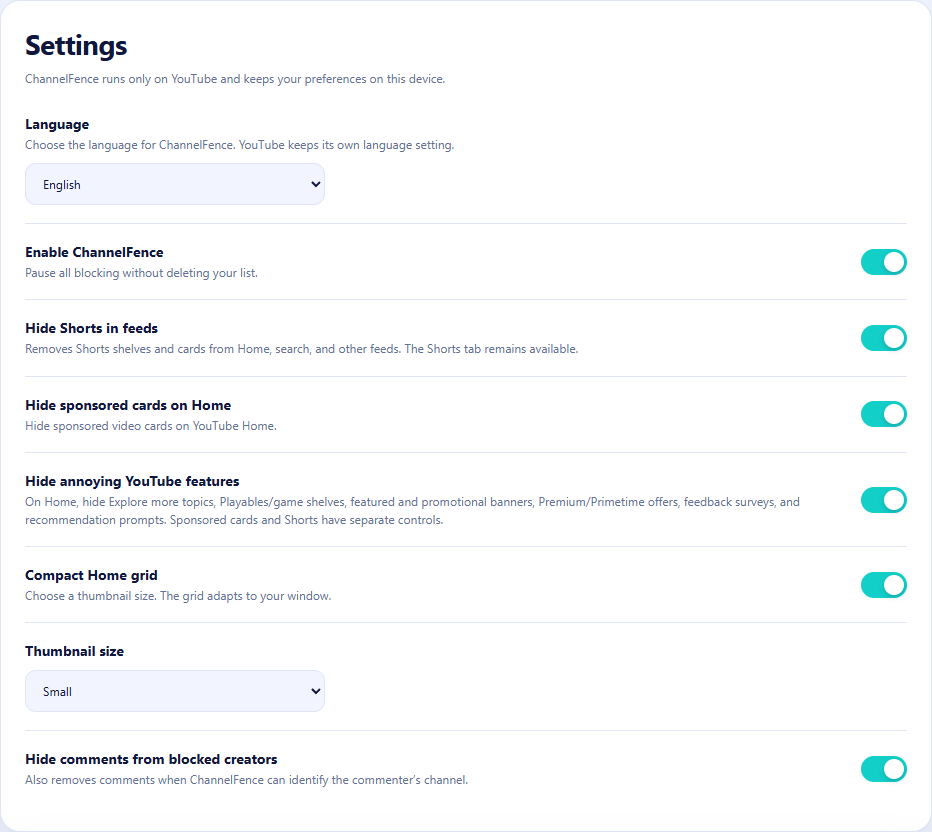

From the developer of ChannelFence
ChannelFence vs. Unhook
Want a better YouTube feed while keeping recommendations? ChannelFence lets you block specific creators and tidy up Home. Unhook focuses on hiding sections of YouTube and reducing distractions.
I built ChannelFence for people who still enjoy discovering videos but want control over the creators appearing in their feeds. That is the perspective behind this comparison. Unhook's official Chrome listing showed 1,000,000 users when reviewed.
The controls compared
| What you want to do | ChannelFence 0.2.8 | Unhook 1.6.9 |
|---|---|---|
| Keep recommendations, remove certain creators | A persistent creator list applied across supported YouTube pages | A creator block list is not documented in the reviewed listing |
| Reduce Shorts | Block individual creators or hide supported Shorts shelves and cards while keeping the viewer available | Offers a Shorts hiding control |
| Tidy Home | Optional sponsored-card and promotional-insert hiding, plus a compact thumbnail grid | Can hide the whole Home feed |
| Manage comments | Hide comments from blocked creators | Can hide the entire comments section |
| Limit playback distractions | No autoplay or end-screen controls | Autoplay, annotations, and end-screen controls |
| Choose an interface language | 18 interface options, with automatic selection or a manual setting | English listed |
| Use other browsers | Chrome is the supported browser | Chrome, Edge, Firefox, and Android Firefox documented |
Unhook's capabilities above come from its official listing. An undocumented feature should not be read as proof that it is impossible.
Keep discovery, choose the creators
Suppose your Home page has useful music, tutorials, and gaming videos, but one creator keeps returning. With ChannelFence, you can remove that creator while continuing to browse the rest of your recommendations.
- Use the ChannelFence button beside a supported creator name, or its action in a supported video menu.
- The creator joins your block list. Matching content disappears across supported Home, search, recommendations, Shorts, playlists, and comments.
- Open Manage block list to review or remove that entry. You can also add a handle or channel URL manually and export a backup.
This suits someone who can explain the problem as “I do not want to see this creator again.” It gives you a list you can inspect and change, without needing to remember which video prompted the decision. The blocking guide walks through the controls.
A cleaner Home without losing the feed
ChannelFence 0.2.8 also lets you hide supported sponsored cards and annoying Home inserts such as Explore more topics, Playables, and promotional banners. Each option starts off, so you choose what changes.
Turn on the compact Home grid and choose Small, Medium, or Large thumbnails to fit your browser window. You can combine this with creator blocking and the separate Shorts setting. See the Home cleanup guide for exactly what each switch covers.
These are feed controls. ChannelFence does not skip in-video ads or sponsored Shorts playing inside the Shorts viewer.

When Unhook is the better fit
If you want an empty Home feed, no recommendation sidebar, no comments, or playback distraction controls, Unhook's documented options suit that goal. Its listing also describes embedded-video support. Choose around the browsing experience you want.
YouTube changes. We test for that.
ChannelFence schedules automated checks against real YouTube twice a day, alongside regression checks for updates. My aim is to catch compatibility problems early and fix them before you notice. You can see the public live test results and inspect the source and test code.
Tests cover specific scenarios; a passing run cannot prove every account, layout, or YouTube experiment works. If something slips through, send a reproducible example so it can be investigated.
Privacy and how this comparison was checked
ChannelFence is free and MIT-licensed, with no account or extension analytics. Your block list and preferences stay in local extension storage. Compact Shorts can require public creator lookups directly to YouTube, without account credentials; the privacy policy explains this.
Unhook's listing declares no data collection. This comparison is not a security audit or a claim that either extension is safer.
ChannelFence details were checked against version 0.2.8 and its repository. Unhook details were checked against its Chrome Web Store listing and official website, not a hands-on competitor test. Features may change after the review date.
Keep your feed. Choose who appears in it.
Try ChannelFence's creator list and optional Home controls.